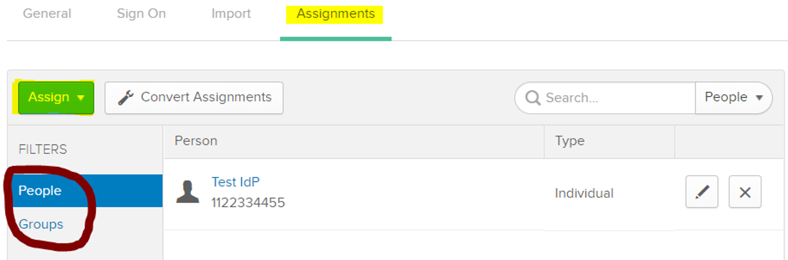
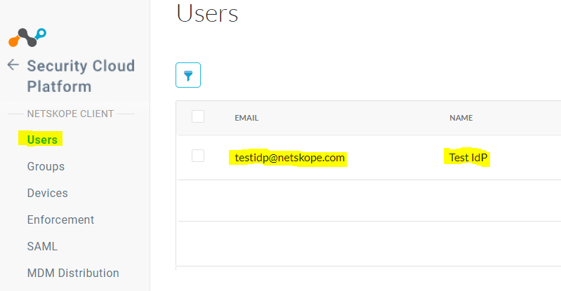
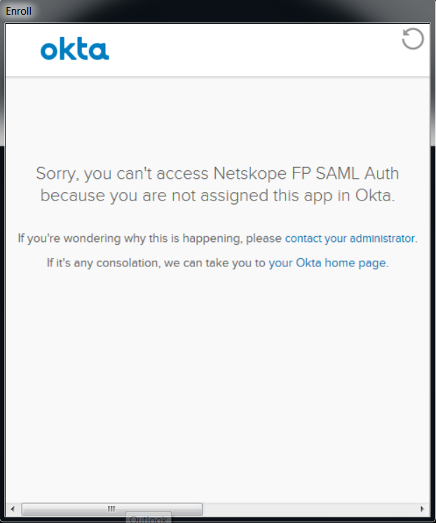
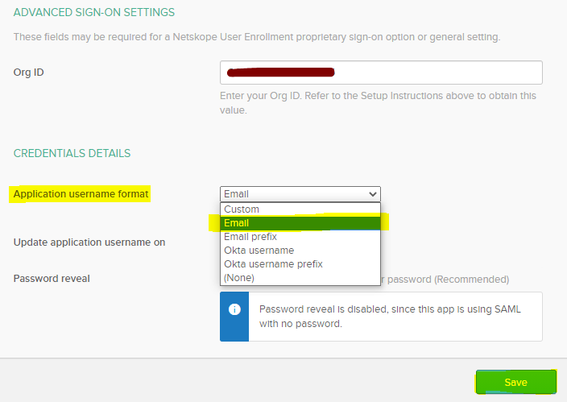

Okta SCIM and SAML Auth Troubleshooting
Here are some troubleshooting considerations if you have configuration issues.
Netskope Client displays error downloading the configuration file post login to the IdP
The Netskope Client displays this error when downloading configuration files.
 |
This error can occur when a user is not assigned to the Netskope User Provisioning app in Okta, when SSO attributes are not configured correctly in Okta, or when a user is not on-boarded into the Netskope tenant. Here are some troubleshooting methods.
Check if user has been assigned to the Netskope User Provisioning app in Okta, which on-boards users into the Netskope tenant.
 Check if Application Username Format is set to Email under the Sign-On tab in the Netskope User Provisioning app in OKTA

Check if the user has been on-boarded into the tenant under Settings > Active Platform > Users.

After logging in to Okta via the Netskope Client, I get a message that I am not assigned to the app in Okta
You may get the below message if you have not been assigned to the Netskope application in Okta post login.
|  |
Check if user has been assigned to the Netskope User Enrollment applications in OKTA which does the SAML Forward Proxy sign-on for the Netskope Client.
I have been on-boarded into Netskope tenant with my Email address but I use my employee ID (e.g. 1122334455) as my OKTA login and not my email address, so will Netskope Client work in IDP mode?
Yes, the Netskope Client will work even if your Okta login ID does not match your email address as long as user’s email address has been set and configured in Okta
Email address must be populated under Email attribute in the user’s profile in OKTA

Set Application Username Format to Email under sign-on tab for both Netskope User Provisioning & Netskope User Enrollment applications in Okta.

I have removed/de-provisioned the user from the tenant, so why is the Netskope Client is still active on the user device?
By design once the user configuration files have been downloaded onto the device the Netskope Client will always enable itself even if the user has been removed/de-provisioned from the tenant.
The solution is to select Uninstall clients automatically in the device config. This will automatically uninstall the client from the device.
 |
Note: If client was installed with multi-user option, this will only remove Netskope Client user configs from the user’s profile on the next config sync or reboot. This does not affect other users on the device.